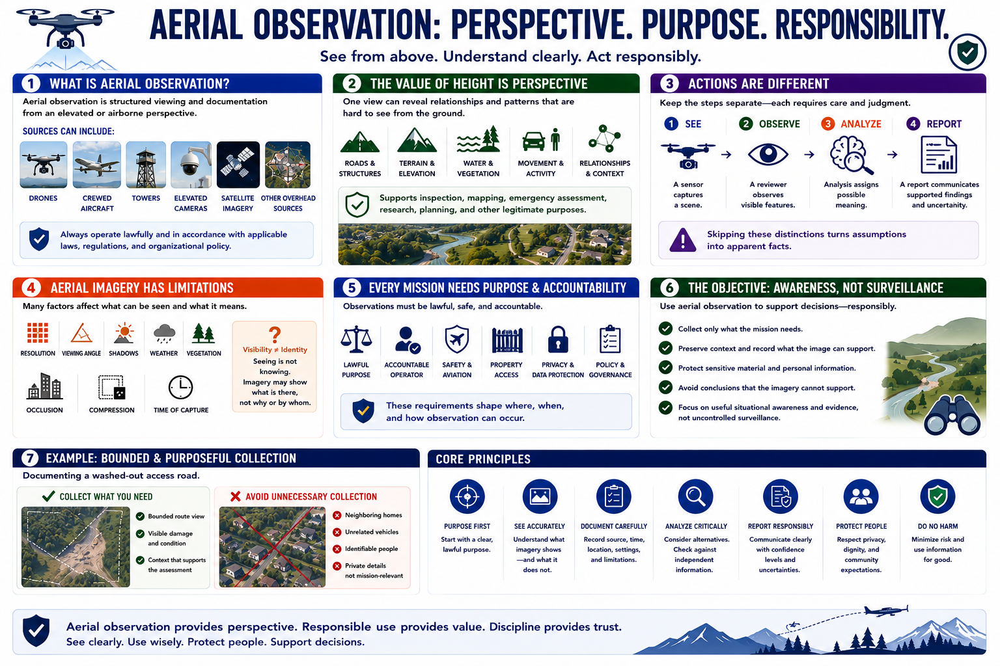

What Is Aerial Observation?
Connecting to LMS... Progress: in progress

Narration
Aerial observation is structured viewing and documentation from an elevated or airborne perspective. Sources can include drones, crewed aircraft, towers, elevated cameras, and lawfully obtained satellite or other overhead imagery.
The value of height is perspective. One view may show roads, structures, terrain, water, vegetation, movement, and relationships that are difficult to understand from the ground. That perspective can support inspection, mapping, emergency assessment, research, planning, and other legitimate purposes.
Seeing, recording, interpreting, and reporting are different actions. A sensor captures a scene. A reviewer observes visible features. Analysis assigns possible meaning. A report communicates supported findings and uncertainty. Skipping these distinctions turns assumptions into apparent facts.
Aerial imagery has limitations. Resolution, viewing angle, shadows, weather, vegetation, occlusion, compression, and time of capture affect what can be seen. A person, vehicle, or structure may be visible without revealing identity, ownership, intent, or cause.
Every mission needs a lawful purpose and an accountable operator. Safety, aviation requirements, property access, privacy, data protection, and organizational policy shape where and how observation occurs.
The objective is useful situational awareness and evidence, not uncontrolled surveillance. Collect only what the mission needs, preserve context, protect sensitive material, and avoid conclusions that the imagery cannot support.
For example, documenting a washed-out access road requires a bounded route view and visible condition evidence. It does not require broad collection of neighboring homes, unrelated vehicles, or identifiable people.